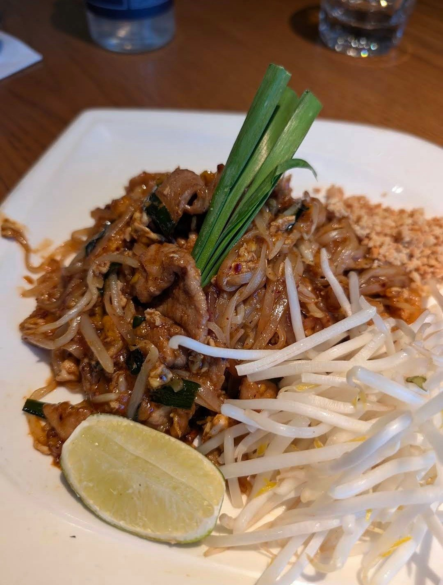
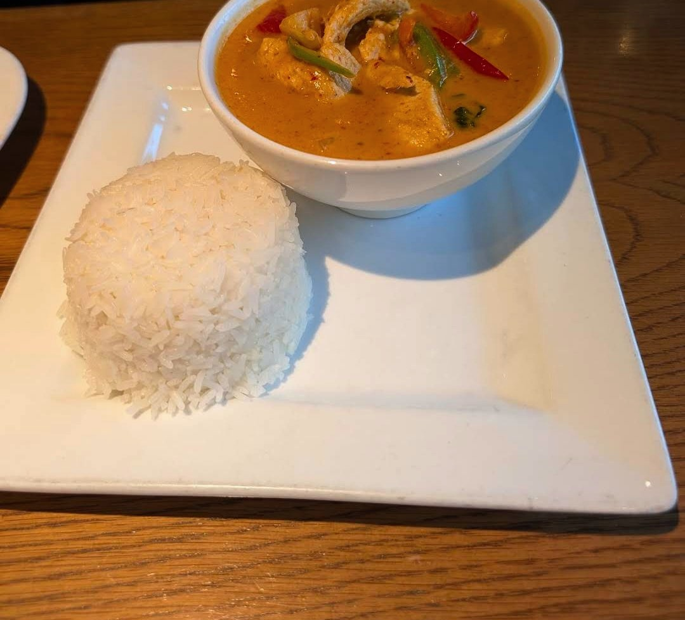

Bai Tong Thai Street Cafe
Fantastic Thai Food and Excellent Service
1121 E Pike St, Seattle, WA 98122
Rating: 5/5
I had a great experience at Bai Tong Thai Street Cafe in Seattle. The service was friendly and attentive from start to finish, and the food absolutely lived up to the hype. We ordered the Crispy Garlic Chicken, Pad Thai, and Panang Curry—every dish was flavorful, perfectly cooked, and beautifully presented. The crispy garlic chicken was especially memorable with its crunch and bold flavor. Definitely a spot I’d return to and recommend to anyone craving an authentic Thai street food vibe.
Crispy Garlic Chicken · Pad Thai · Panang Curry
About the place
Capitol Hill restaurant from the Bai Tong family of Thai restaurants, focused on the street food of Thailand: tom yum noodles, Thai sausage and Thai chicken rice. It also serves classics like pad Thai and curries, with a full bar and Thai-inspired cocktails.
What other diners say: Reviewers on Yelp and Tripadvisor often praise the lively atmosphere, big portions, Thai tea and cocktails, and dishes like crab fried rice and crispy garlic chicken. Some say prices are high and the spice level and service can be inconsistent, and it gets busy on weekends.
Sources: Bai Tong's website, OpenTable, Yelp and Tripadvisor. Summaries are paraphrased, not quotes.





Comments
Sign in with GitHub to leave a comment or reaction.